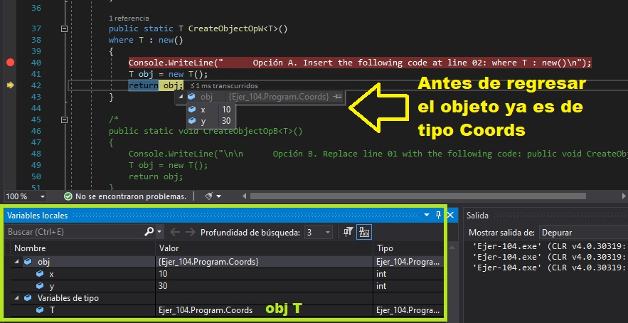

|
You are writing the following method (line numbers are included for reference only): You need to ensure that CreateObject compiles successfully. What should you do? A. Insert the following code at line 02: where T : new() B. Replace line 01 with the following code: public void CreateObject<T>() C. Replace line 01 with the following code: public Object CreateObject<T>() D. Insert the following code at line 02: where T : Object Correct Answer: A Section: Volume B Explanation Explanation/Reference: ExplicaciónOpción A. Insert the following code at line 02: where T : new() Esta es la respuesta correcta. El objeto es creado con el método genérico que es dado en la opción.Para probar la respuesta correcta hemos ejecutado el programa con solo esta opción ya quiere las otras dan errores y no compilan. Como se ve en la siguiente imagen el objecto genérico es creado y luego se convierte al actual que en esta caso es objeto de tipo 'Coords'.Mostrando de manera visual la respuesta:Opcion B. Replace line 01 with the following code: public void CreateObject El error que da la compilación es: Ejer-104\Program.cs(35,33): error CS0304: No se puede crear una instancia del tipo de variable 'T' porque no tiene la restricción new() Lo que quiere decir es que para poder instanciar un objeto del Tipo T como no lleva la restricción 'new()' no se puede instanciar, que es lo que hace la línea 4 del código dado. Ver las fuentes dadas al final. Opción C. Replace line 01 with the following code: public Object CreateObject El error que da la compilación es: Ejer-104\Program.cs(35,33): error CS0304: No se puede crear una instancia del tipo de variable 'T' porque no tiene la restricción new() Este es el mismo error de la Opción B y la explicación es la misma. NO se puede instanciar el objeto como se hace en la línea 4 ya que no existe la restricción 'new()' en la línea 1. Ver las fuentes dadas al final. Opción D. Insert the following code at line 02: where T : Object El error que da la compilación es:Ejer-104\Program.cs(46,54): error CS0702: La restricción no puede ser la clase especial 'object' Al declarar una clase y luego escribimos ': where' estamos restringiendo a la clase a cierta forma de crear instancias de la misma. Las restricciones informan al compilador sobre las capacidades que debe tener un argumento de tipo. Sin restricciones, el argumento de tipo puede ser cualquier tipo. Del tipo de restricciones que aparecen en las fuentes dadas al final, no podemos usar 'Object' ya que da error, como se escribe en la descripción del mismo, esta es una clase especial. Ver las fuentes dadas al final. Respuesta:La Respuesta correcta es la dada en el ejercicio. Ver explicación.Fuentes:https://docs.microsoft.com/en-Us/dotnet/csharp/language-reference/compiler-messages/cs0304 https://docs.microsoft.com/es-es/dotnet/csharp/programming-guide/generics/constraints-on-type-parameters |